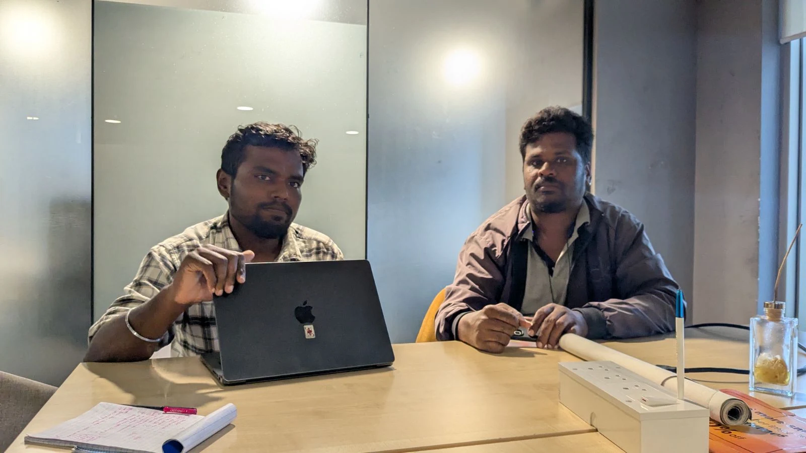

▶
Thanuj Kumar
Onboarding, app issues, slots, support flow, surge visibility
Thanuj Kumar
Onboarding, app issues, slots, support flow, surge visibility
Onboarding & Training
| Finding | Insight | Opportunity |
|---|---|---|
| Training videos exist but live in Google Drive. Ops manually shares links when drivers ask. | Drivers can't discover help on their own — rely entirely on ops for learning. | Surface training videos inside the app — contextual help at point of confusion. |
| No in-app onboarding. New drivers need coachmarks or a starter helper to understand the app independently. | Drivers download and are expected to figure it out alone. Any confusion = call to support. | In-app coachmarks or guided starter flow for first-time users. |
| "In progress" state shown when onboarding is incomplete — but doesn't say what's actually pending. | Team knows the blocker (e.g., PAN under review) but doesn't surface it. Drivers call support → low priority queue. | Show explicit blocker (e.g., "PAN under review — 2–3 days") so drivers don't need to call. |
| Ops proposed: block repeat-cancellers → require training video + quiz → unblock. | Ops sees training as a lever for behavior change, not just education. | Use training content as an enforcement/recovery mechanism (not just onboarding). |
App Usability
| Finding | Insight | Opportunity |
|---|---|---|
| "Swipe to mark arrived/delivered" sometimes doesn't register — buffering/loading issue. | Core action failure. If primary action is unreliable, drivers lose trust in the app entirely. | Fix swipe reliability or provide a fallback action (e.g., button tap). |
| Drivers call ops when they can't: mark arrived, mark delivered, find customer contact number. | Basic, high-frequency actions require human support. App is failing at its primary job. | Surface customer contact prominently. Ensure core status actions always work. |
Slots Feature
| Finding | Insight | Opportunity |
|---|---|---|
| Slots work well for 2W — 70%+ show up. Tata Ace drivers avoid slots because auto-assign sends them to unwanted locations. | Slots require giving up control. For Tata Ace (long routes, more effort), auto-assign ignoring preferences kills the value. | Route preference or opt-out for auto-assigned orders within slots. |
| Only Star drivers can access Slots. Two models: Flexi (default) vs Slots (opt-in, guaranteed earning). | Non-Star majority has no path to guaranteed earning even if willing to commit. | — |
Surge & Demand Visibility
| Finding | Insight | Opportunity |
|---|---|---|
| Drivers want to see high-demand/surge areas on map (like Rapido). Currently ops sends push notifications to drivers in surge areas. | No in-app visibility of demand. Drivers can't proactively position themselves — they wait passively for a PN. | Show surge zones on map in-app. Let drivers decide where to go instead of waiting for notifications. |
Driver Support Flow
Inequity: Drivers with ops connections skip the queue and get faster resolution. Others go through Goa CX (low priority) — adding delay and frustration.
▶
M Gowda Gowda
Swipe issues, route mismatch, cancellation attribution, demand visibility, vehicle mismatch
M Gowda Gowda
Swipe issues, route mismatch, cancellation attribution, demand visibility, vehicle mismatch
Driver Profile & Analytics
Tier: Star
Tenure: 1 yr (joined Dec '25)
Area: Vijayanagar (lives Chandra Layout)
Hours: 9+ hrs/day (full slots)
Goal: ₹1,200/day excl. expenses
Other apps: Porter, Rapido Parcel
Previous: Swiggy (left for daily wages)
Status: Active (no order in 7 days)
Rating: 4.3 lifetime / 4.73 L30D
Completion: 67.89% | Cancel: 4.67%
L30D Earnings: ₹10,828 (₹601 today)
On-time pickup: 99.01%
On-time drop: 100%
On-time overall: 99.5%
Bad ratings: 0
Slots: 28 booked / 12 completed
Broadcast & Order Acceptance
| Finding | Insight | Opportunity |
|---|---|---|
| Looks at pickup distance, drop distance, route familiarity, and amount before deciding to accept. | Drivers need confident route knowledge + fair pay to accept. Unfamiliar areas = automatic rejection. | Show landmarks or familiar reference points in broadcast info to aid snap decisions. |
| If idle for 1–2 hrs with no orders, moves to a nearby area with higher demand — based on work experience. | Veteran drivers build mental demand maps. No in-app help for newer drivers to do the same. | Show demand/order density on map (surge zones) so all drivers can reposition intelligently. |
| Has never taken a Trip Radar trip. | Trip Radar isn't discoverable or compelling enough for some segment of drivers. | Investigate Trip Radar awareness; improve value prop or discoverability. |
App Reliability & Usability
| Finding | Insight | Opportunity |
|---|---|---|
| "Swipe to start trip" is a big issue — not responsive, frequently fails. | Core action failure. Confirmed across multiple interviews — this is systemic, not edge-case. | Fix swipe reliability. Provide fallback tap action for critical state transitions. |
| Unable to mark "arrived" once he reaches pickup. Even if marked, not displaying in the app. Calls ops to force-mark. | App state management failing on critical status transitions. Drivers rely on ops as workaround. | Investigate and fix arrived/delivered state sync bugs. Add retry mechanism. |
| Can't see why a cancelled order was cancelled — customer-initiated vs driver-attributed. | Unclear attribution affects MBG eligibility (>1 cancellation = no guaranteed pay). Feels unjust. | Show cancellation reason + attribution (customer vs driver vs system) in order history. |
Route & Navigation
| Finding | Insight | Opportunity |
|---|---|---|
| Actual route/distance is frequently very different from what was shown when he accepted. | Distance shown at broadcast ≠ real-world route. Creates regret → future broadcast rejection. | Show actual route distance (not straight-line) in broadcast card. |
| Wants nearby landmarks shown in pickup and drop screens after accepting, to understand location better. | Drivers think in landmarks and local references — not formal addresses. | Add landmark context to pickup/drop address display. |
| If he can't find the address, calls customer or support. | Address findability is a recurring friction point — both at pickup and drop. | Allow drivers to attach/view landmark photos for frequently used addresses. |
Pickup & Delivery Experience
| Finding | Insight | Opportunity |
|---|---|---|
| Waits 5–20 mins at pickup. Sometimes customer/merchant won't answer phone, adding more delay. | Unpaid wait time is a tax on every order. Compounds frustration with unresponsive merchants. | Consider wait-time compensation or merchant readiness signals. |
| If pickup distance <2km, won't call consumer. If >2km, informs them he's on the way. | Drivers self-manage consumer communication using a distance-based heuristic. | Auto-notify consumer for longer pickups; support the driver's existing behavior. |
| Most orders are COD. | Cash-heavy workflow = daily cash management overhead (change, disputes, collection). | — |
Work Area & Geofencing
| Finding | Insight | Opportunity |
|---|---|---|
| Used to log in from home (Chandra Layout) but geofence was removed. Now commutes to Vijayanagar work area unpaid. | Geofence policy change forced unpaid commute. Driver lost flexibility he once had. | Consider expanding login zones or showing nearest active zone from driver's location. |
Vehicle & Package Mismatch
| Finding | Insight | Opportunity |
|---|---|---|
| Gets oversized packages assigned to his bike. Suggests: let drivers choose between scooty and bike, assign packages based on that. | Current 2W classification is too coarse (bike AND scooty lumped together). Causes mismatches → cancellations. | Add sub-vehicle type selection (scooty vs bike). Match package size to actual vehicle capacity. |
| Double orders assigned → one gets cancelled → cancellation attributed to driver. | System-generated cancellations unfairly penalizing drivers. Affects MBG eligibility and driver trust. | Fix attribution logic: system-forced cancellations should not count against driver metrics. |
Competitor Comparison
| Finding | Insight | Opportunity |
|---|---|---|
| Earning more from Delhivery because of slots. Uses Porter and Rapido as secondary. | Slots are a genuine competitive advantage when they work — drivers stay loyal for guaranteed income. | Protect and improve slots experience — it's the retention hook. |
Top Support Issues (Self-Reported)
| Issue | Root Cause | Opportunity |
|---|---|---|
| 1. Customer not taking phone / not responding | Driver has no way to escalate or proceed when the consumer is unreachable. Gets stuck waiting with no next step. | Auto-escalate unresponsive customer after N attempts. Provide clear next-step flow in-app. |
| 2. Oversized packages assigned to bike | Current 2W classification lumps scooty and bike together. System doesn't account for actual carrying capacity, sending large packages to bikes that can't handle them. | Ask driver to choose scooty or bike during registration. Assign packages based on that vehicle sub-type and its capacity. |
| 3. Double orders — getting two orders at once, one gets cancelled, cancellation falls under driver's name | System assigns multiple orders simultaneously. When one is cancelled (not by driver), the cancellation is still attributed to the driver. This unfairly impacts their record. | Fix attribution logic: system-forced or double-order cancellations should not count against driver metrics. |
| 4. Not able to mark arrived or start trip | Core app action (swipe/mark) fails to register or display. Driver is stuck and has to call ops to manually update the status. | Fix swipe reliability. Add fallback tap action. Ensure state syncs correctly after marking. |
| 5. Can't tell if cancellation is consumer-related or driver-related | Driver doesn't know who cancelled — customer, system, or themselves. This matters because MBG won't pay if driver cancels more than 1 trip. Without clear attribution, drivers feel penalized unfairly. | Show clear cancellation reason + who initiated it (customer vs driver vs system) in order history. Separate MBG penalty logic for system/customer cancellations. |
▶
Murugan G
Distance mismatch, address issues, swipe failures, fare comparison with Porter, slot notifications
Murugan G
Distance mismatch, address issues, swipe failures, fare comparison with Porter, slot notifications
Driver Profile & Analytics
Tier: Star
Tenure: 1.2 months (joined Jul '25, first order Mar '26)
Area: Bannerghatta, Bangalore
Earning Goal: ₹1,000/day after expenses (₹14K/week when at Dunzo)
Other apps: Porter
Previous: Dunzo (knows demand areas from that experience)
Status: Active (no order in 7 days)
Rating: 4.7 lifetime / 4.92 L30D
Completion: 76.63% | Cancel: 1.61%
L30D Earnings: ₹13,379 (₹787 today)
On-time pickup: 100%
On-time drop: 97.89%
On-time overall: 98.95%
Bad ratings: 0
Slots: 23 booked / 13 completed
Broadcast & Order Acceptance
| Finding | Insight | Opportunity |
|---|---|---|
| Pickup distance is the primary filter — should be below 3km for him to accept. | Drivers have a hard threshold for pickup distance. Anything beyond it is an automatic reject regardless of fare. | Consider pickup distance as a factor in broadcast targeting — don't send orders with >3km pickup to drivers who consistently reject them. |
| Information shown in broadcast is enough for him to decide. | Not all drivers need more info — some have streamlined their decision to distance + amount only. | — |
| During slots, orders are auto-assigned but sometimes there's no sound notification. Out of 6 orders, misses 1–2 because of this. | Silent auto-assign means drivers miss noticing the order entirely — they remain unaware for some time. The app does use sounds, but sometimes the sound doesn't come through, and the root cause is unclear. | Investigate why notification sound fails intermittently (OS-level permissions, battery optimization, app state?). Add a fallback mechanism — persistent visual alert, vibration, or repeated notification — to ensure drivers never miss an auto-assigned order. |
| As he was delivering since Dunzo and then Porter, he knows where all the high-demand areas are. Goes there proactively. | Cross-platform knowledge transfer — veteran multi-app drivers carry mental maps across apps. | Surface demand zones in-app to give all drivers what veterans already know. |
App Reliability & Usability
| Finding | Insight | Opportunity |
|---|---|---|
| Not able to swipe — calls ops team to mark status. | Swipe failure confirmed again (3rd source). Ops team is being used as a manual override for a broken core action. | Fix swipe reliability. Add fallback button. Track swipe failure rate as a product metric. |
| When he tries to go offline after his login hours are completed, he still gets an order. He cancels that order. | System sends orders even when driver is trying to end shift. Forces a cancellation that counts against them. | Respect driver's intent to go offline — don't assign new orders during logout transition. Add "winding down" state. |
Route & Address Issues
| Finding | Insight | Opportunity |
|---|---|---|
| Pickup distance shown vs actual distance is completely different. | Straight-line vs road distance gap confirmed again. Creates broken trust in broadcast info. | Show route-based distance in broadcast, not straight-line. |
| Customer says "I marked correct address" but app shows a different place. Driver calls customer, gets correct address, travels extra. Customer blames driver. Delhivery doesn't pay for extra distance. Porter pays for extra movement (>1km). | Address mismatch creates a triple penalty: extra travel (unpaid), customer anger (directed at driver), and no compensation. Porter's model (pay for extra km) is the benchmark. | Detect address deviation >1km and compensate driver for extra distance. Porter already does this. |
| Most of the time he calls customer to confirm the exact place to reach. For repeat customers — shops he's delivered to before on Delhivery or Porter — he knows who they are and reaches their place without calling. | Familiarity with a customer eliminates the call, reduces confusion, and speeds up pickup. Repeat driver-customer pairings naturally reduce friction. | Rank driver assignment by past delivery history with that customer + proximity. If a driver has delivered to the same customer/shop multiple times and is nearby, prioritize them. This reduces pickup time and increases fulfillment — the driver already knows the exact location. |
Pricing & Earnings
| Finding | Insight | Opportunity |
|---|---|---|
| Porter gives more money. Example: 47km = ₹520 on Delhivery vs 40km = ₹600 on Porter. | Per-km rate is visibly lower than Porter. Drivers do direct comparisons and remember specific examples. | Review pricing parity with Porter, especially for long-distance orders. |
| In Delhivery slots, system counts only drop km — not pickup distance — for earnings calculation. | Drivers travel to pickup unpaid. If pickup is 5km and drop is 3km, they're paid for 3km of an 8km journey. Feels exploitative. | Include pickup distance in fare calculation, or at minimum show total distance (pickup + drop) so drivers understand the full picture. |
| Waiting time at customer — not being paid for it. | Unpaid wait time confirmed again. Combined with unpaid pickup distance, drivers feel they're absorbing too much cost. | Introduce wait-time compensation after a threshold (e.g., 5 mins). |
| No problem with earnings transparency. Initially confused about "collect from customer" (COD added to wallet), but understood it over time. | Earnings page is understandable once learned — but COD wallet flow is confusing for new drivers. | Better onboarding for COD wallet flow — explain "collect from customer" clearly on first encounter. |
Slots & Cancellation
| Finding | Insight | Opportunity |
|---|---|---|
| No issues with slots — he likes them. | Slots working well for this driver segment (2W, experienced, committed). | — |
| Cancellation charge now added when customer cancels after driver reaches the location. | This is a positive recent change — driver appreciates being compensated when customer wastes their time. | Communicate this policy clearly to all drivers — it's a retention-positive feature. |
Competitor Comparison
| Finding | Insight | Opportunity |
|---|---|---|
| Porter gives more money — that's the only difference he cites. | Price is the primary differentiator. App experience, features, etc. are secondary to per-order earnings. | Compete on effective earnings (fare + incentives + slot guarantee) rather than just base fare. |
| Rapido: return orders need to be near home at end of day. | Rapido has a return-to-home-zone feature that drivers value — reduces dead-km at end of shift. | Consider end-of-shift routing that brings drivers closer to home. |
| Feels there should NOT be a bike vs scooty distinction — most consumers prefer scooty, so bike drivers lose out. | Vehicle sub-type differentiation (from previous interview's suggestion) has a counter-argument: if consumers prefer scooty, bike-only drivers would get fewer orders. | Important design tension — vehicle sub-typing needs careful demand balancing. Note: contradicts previous driver's suggestion. |
Onboarding & Learning
| Finding | Insight | Opportunity |
|---|---|---|
| Training videos would help, but only 50–60%. Remaining 40% has to be learned by doing — experiencing the app. | Videos are supplementary, not sufficient. Real learning happens through live orders. First few orders are the critical learning window. | Combine training videos with guided first-order experience (hand-holding for first 3–5 orders). |
| Initially confused by "collect from customer" earnings data. But after 2 orders he learned how to do it. | COD wallet flow is briefly confusing but self-resolves quickly through experience. Not a lasting pain point — drivers figure it out within their first few orders. | Low priority — a simple one-time tooltip on the first COD order would eliminate even the brief confusion, but this isn't blocking anyone. |
Top Support Issues (Self-Reported)
| Issue | Root Cause | Opportunity |
|---|---|---|
| 1. Long pickup distance (shown vs actual mismatch) | System shows straight-line distance, actual road distance is much more. Driver commits based on wrong info. | Show route-based distance. Consider hard cap on pickup assignment radius. |
| 2. Fare is much lower compared to Porter | Direct per-km comparison puts Delhivery at a disadvantage. Drivers share these comparisons with each other. | Review fare structure. If base fare can't match, compensate through pickup km + wait time pay. |
| 3. Support team is not connecting / hard to reach | When driver has a live issue (stuck swipe, address problem), delayed support = lost time and money. | Faster support response for live-trip issues. In-app self-serve for common problems (swipe stuck, address wrong). |
| 4. Customer location problem — app shows wrong place, driver travels extra unpaid | Address accuracy is a platform-level issue. Driver absorbs the cost of the system's error. | Detect route deviation >1km and auto-compensate. Porter already does this. |
| 5. Oversized package — customer won't cancel, driver is stuck | Driver can't refuse oversized package without taking a cancellation hit. Customer won't cancel either. Driver is trapped. | Allow driver-initiated cancel for "package too large" without penalty. Add package size verification at booking. |
Interview Snippet

▶
Loknath M M
3W economics, Trip Radar surge loophole, loading/unloading monetization, support breakdown, vehicle road restrictions
Loknath M M
3W economics, Trip Radar surge loophole, loading/unloading monetization, support breakdown, vehicle road restrictions
Driver Profile & Analytics
Tier: Not a Star partner (no Slots access)
Tenure: 5 months (since buying his 3W)
Area: Kasturi Nagar, Bangalore (starts ~9:30am, 2km out)
Earning Goal: ₹3,000/day (~₹500 goes to fuel)
Other apps: Porter (primary), Towner (new, zero-commission)
Phone: 6360495545
Delhivery pace: ~1 order/hour
Porter pace: Back-to-back, non-stop orders
Lifetime deliveries, ratings, completion %, cancel %,
on-time % and slots data were not captured for this driver.
Economics & Order Volume
| Finding | Insight | Opportunity |
|---|---|---|
| Delhivery gives ~1 order/hour (≈10 orders/week); Porter gives back-to-back, non-stop orders. He stays on Delhivery only for the rare well-priced order. | Order volume — not app quality — is the deciding factor. Delhivery is a fallback, not a primary earner, purely because supply is thin. | Volume is the retention lever for 3W. Without a baseline order flow, feature work won't move engagement. |
| Only takes an order if it works out to ~₹30/km. Uses this to decide between Porter and Delhivery per-order. | Drivers do live per-km math on every broadcast. A fixed mental floor (₹30/km) gates acceptance regardless of platform. | Show effective ₹/km on the broadcast card so the driver's own math is done for them — speeds accept decisions. |
| Delhivery pays less on long orders, so he only accepts <10km orders here. Longer, better-paid long-hauls go to Porter. | Fare structure pushes the profitable long-distance work to competitors. Delhivery gets only the short, low-value tail. | Review long-distance 3W fare parity — currently structurally uncompetitive beyond ~10km. |
| Target ₹3,000/day, ~₹500 to fuel. Expects a return trip on every long order — wants a "Go to Home" feature like Rapido. | Dead-km on the return leg is a real cost. Without return orders, long trips are net-negative for a 3W. | End-of-trip / go-home routing that surfaces return-direction orders. Directly addresses long-haul reluctance. |
Trip Radar & Surge Loophole
| Finding | Insight | Opportunity |
|---|---|---|
| Loves the recently launched Trip Radar — finds it genuinely useful. Notes Porter launched a similar "available orders" view. | Trip Radar has real pull for this driver — a rare feature he praises unprompted. Validates the concept. | Trip Radar is a keeper — invest in it. Confirms demand for a browseable, pull-based order view. |
| Surge loophole: Drivers know that a missed broadcast flows to Trip Radar, then gets surge added over time. So they deliberately ignore long-distance broadcasts and wait for the surge to climb before accepting. He says all his friends do this. | The escalation logic is being gamed at scale. Predictable surge-over-time trains drivers to reject first and harvest surge later — inflating payout and hurting acceptance/fulfillment metrics. | Make surge escalation non-deterministic or cap the wait-to-surge pattern. Reward early acceptance instead of penalizing it. Investigate how widespread the behavior is. |
Loading / Unloading Monetization
| Finding | Insight | Opportunity |
|---|---|---|
| Loading/unloading takes a lot of time; the driver wants to reduce that waiting and, critically, wants visibility into how much he waited and how much he earned for that wait time. | Wait time at load/unload is a hidden, unpaid tax for 3W drivers. No visibility = feels like pure loss. | Show load/unload wait time and its associated earning in the trip/earning breakdown. |
| Porter pays for extra waiting time and shows the full breakdown in earning details. This is a key reason he tolerates Porter despite lower per-order pay. | Transparency + wait pay together beat raw fare. Porter wins loyalty by showing the driver every rupee's origin. | Match Porter's earning-detail transparency: itemize base, distance, wait, surge, and labour. |
| User explicitly wants a loading/unloading (helper/labour) feature in our app. Porter's consumer app has a toggle: if the customer switches it on, the driver earns more for helping. In Porter's broadcast it shows a "Loading & Unloading" tag; drivers prefer these orders because they pay more. In Porter's driver live-trip it shows as a "Labour" tag. | A concrete, proven earning feature we lack. It converts an unavoidable chore into paid work and makes high-value orders visually identifiable at broadcast. | Build a consumer-side helper toggle + driver-side "Labour"/"Loading & Unloading" tag on broadcast and live trip, with the extra pay reflected in earnings. |
| Porter UX gap he noticed: whatever the customer specifies (floor info, from-which-floor-to-which-floor, other load details) is NOT shown to the driver. | Even the benchmark leaves the driver blind to job scope. If we build labour, showing these details is an easy differentiator. | When building labour, surface the customer's floor/scope details to the driver so effort is known upfront. |
| If the driver declines to help load/unload, the customer says "I'll cancel, you go" — and we give no goodwill/cancellation charge for these. Pure loss for the driver. | Without a paid labour option, the driver is coerced into free work or eats an uncompensated cancellation. Lose-lose. | A paid labour toggle removes the coercion; until then, apply goodwill charges to load/unload-refusal cancellations. |
Pricing, Commission & Competitors
| Finding | Insight | Opportunity |
|---|---|---|
| Porter charges 15% commission — driver feels it's too much. A new app, "Towner," has zero commission, pays the correct amount, and works on meter mode. | A zero-commission, meter-based competitor is entering the market. Commission is now a live comparison axis for 3W drivers. | Watch Towner. Consider commission transparency and whether a meter-mode/low-commission option is viable for 3W. |
| Wants the app to follow the government-decided minimum per-hour amount. | Drivers are anchoring to a regulatory floor, not just market rates. A compliance-framed pay floor carries moral weight. | Evaluate aligning 3W pay to the govt minimum-per-hour benchmark; useful trust/PR signal. |
| Porter has captured most customers through strong promotion, so customers are more aware of Porter and place more orders there. Driver wants Delhivery to promote more to customers. | The volume gap the driver feels traces back to consumer-side demand generation, not driver-side features. | Consumer-demand marketing is the upstream fix for the 3W order-volume complaint. |
Incentives
| Finding | Insight | Opportunity |
|---|---|---|
| Recently launched incentives feel very low — he and none of his friends care about them, because incentives are order-count based and Delhivery doesn't give enough orders to ever hit them. | Order-count incentives are structurally unreachable when supply is thin. They signal effort without being achievable — so they're ignored entirely. | Re-base incentives on achievable targets given real 3W order volume, or shift to per-trip/quality-based rewards instead of volume tiers. |
Support Experience
| Finding | Insight | Opportunity |
|---|---|---|
| Wants to update his own bank details in the app, but there's no self-serve option to edit the bank field — so he had to call support. | A basic self-serve gap forces a support call for something the driver could do himself in seconds. | Add self-serve bank-detail editing (with verification) in the app. |
| Waited 10+ min to connect to support. Language mismatch: driver speaks Kannada, support speaks Hindi; when support hears a language they don't know, they cut the call. Then asked him to email — without even saying the email ID properly. | Support is failing on wait time AND language routing. Cutting calls over language is a trust-destroying experience for regional drivers. | Language-based support routing (Kannada line). Reduce wait time. Never drop calls over language — transfer instead. |
| Emailed support on Aug 20 — no response. Eventually found the ops team and physically came to the office to change his bank details. | Every support channel failed (call, email), forcing an in-person office visit for a trivial change. Complete channel breakdown. | Close the loop on emails with SLAs; the self-serve fix above eliminates this journey entirely. |
Vehicle Road Restrictions
| Finding | Insight | Opportunity |
|---|---|---|
| Some areas/roads don't allow 3W (e.g., Brigade Road, Bangalore), but the app doesn't show this. The rider calls the customer to explain, the customer doesn't accept the reason and cancels — and it counts as a driver cancellation. | The app ignores real-world vehicle road restrictions, then penalizes the driver for the resulting cancellation. Same unfair-attribution theme, 3W flavour. | Encode vehicle-type road restrictions; warn/route around them at assignment; don't attribute the resulting cancellation to the driver. |
| Wants routes customised to real-world conditions for his vehicle type — not always what Google shows (e.g., offer an alternate route around a 3W-restricted zone). | Generic navigation doesn't respect vehicle-class constraints. Drivers want vehicle-aware routing. | Vehicle-type-aware routing that avoids restricted roads and shows the customer a valid alternate route. |
| Won't accept orders outside the city — traffic plus no return order makes them unviable. Delhivery gives more orders in Chikpete, but he avoids it (too narrow to drive a 3W). | Demand exists where the 3W physically can't operate comfortably. Order density and vehicle suitability are mismatched. | Factor vehicle suitability (road width, restrictions) into where 3W orders are surfaced. |
Broadcast & Distance Accuracy
| Finding | Insight | Opportunity |
|---|---|---|
| Broadcast km are wrong — distance seems calculated for a bike, not a car/3W-viable route. Sometimes off by 3–4km, a loss of ~₹90 per order. | Straight-line / bike-route distance confirmed again, now with a 3W-specific cost (₹90/order). Same root issue, quantified. | Compute broadcast distance on the vehicle-appropriate route (3W/car), not bike/straight-line. |
| On accepting, he calculates ₹/km; if too low he calls the customer to negotiate a higher price. If they refuse, he cancels. | Underpricing pushes drivers into off-platform price negotiation and cancellations — a fare-structure symptom. | Fix per-km fairness so drivers don't need to renegotiate; surface ₹/km upfront to reduce post-accept regret. |
During Delivery & App Reliability
| Finding | Insight | Opportunity |
|---|---|---|
| Needs an emergency / SOS feature in the app — says drivers really need this. | A safety gap. No in-app way to raise an emergency during a trip. High-severity, previously unraised need. | Add an in-app SOS/emergency button with escalation to support/authorities. |
| Pickup distance shown vs distance actually travelled differ. | Distance mismatch confirmed a 4th time, at pickup — systemic across the fleet. | Route-based, vehicle-aware distance everywhere it's shown. |
| Customers sometimes book a 3W instead of a Tata Ace to save money (Tata Ace is priced higher). This causes the usual fight between customer and driver at pickup. | Price arbitrage across vehicle types creates capacity mismatches and pickup conflicts — a booking-side loophole. | Guardrails on vehicle selection vs load size; verify at booking to prevent 3W-vs-Ace mismatches. |
| When wait time is paid, he can't see it in the wallet or when it was added — no breakdown/visibility. Also hits occasional wallet withdrawal errors. | Even when we pay for wait, the lack of visibility means the driver doesn't trust or notice it. Payment without transparency has little retention value. | Itemize wait-time credits in the wallet with timestamps; fix withdrawal errors. |
| App goes offline and exits automatically; driver gets logged out and must log in again. Happening for the last 2–3 months. | A persistent stability/session bug directly costs order time — driver is offline without knowing. | Investigate auto-logout / crash; add session persistence and a re-login prompt without full logout. |
| Trip-ending issue: on ending a trip the app just shows a loading screen (stuck). | Core state transition (trip completion) hangs — same family as the swipe/marking failures other drivers report. | Fix trip-end completion hang; add retry/fallback and confirm state sync. |
Top Support Issues (Self-Reported)
| Issue | Root Cause | Opportunity |
|---|---|---|
| 1. Too few orders on Delhivery (~1/hr vs Porter non-stop) | Thin 3W supply + weaker consumer awareness. Delhivery is a fallback, not a primary earner. | Grow consumer demand for 3W; without volume, nothing else retains the driver. |
| 2. No paid loading/unloading (labour) option | Unavoidable load/unload work is unpaid and invisible; refusing risks an uncompensated cancellation. Porter monetizes it. | Build consumer helper toggle + driver Labour tag with pay in earnings breakdown. |
| 3. Support unreachable + language mismatch + no self-serve bank edit | Long waits, calls cut over Kannada/Hindi mismatch, unanswered email — forced an office visit for a trivial change. | Kannada routing, faster SLAs, and self-serve bank-detail editing. |
| 4. 3W road restrictions not shown → unfair cancellations | App ignores where a 3W legally can't go; the resulting customer cancellation is blamed on the driver. | Encode vehicle restrictions, route around them, and don't attribute the cancellation to the driver. |
| 5. App stability — auto-logout & stuck trip-end screen | Session drops and a hanging trip-completion loader cost order time and mirror the fleet-wide state-transition bugs. | Fix auto-logout/crash and trip-end hang; add session persistence and retry. |